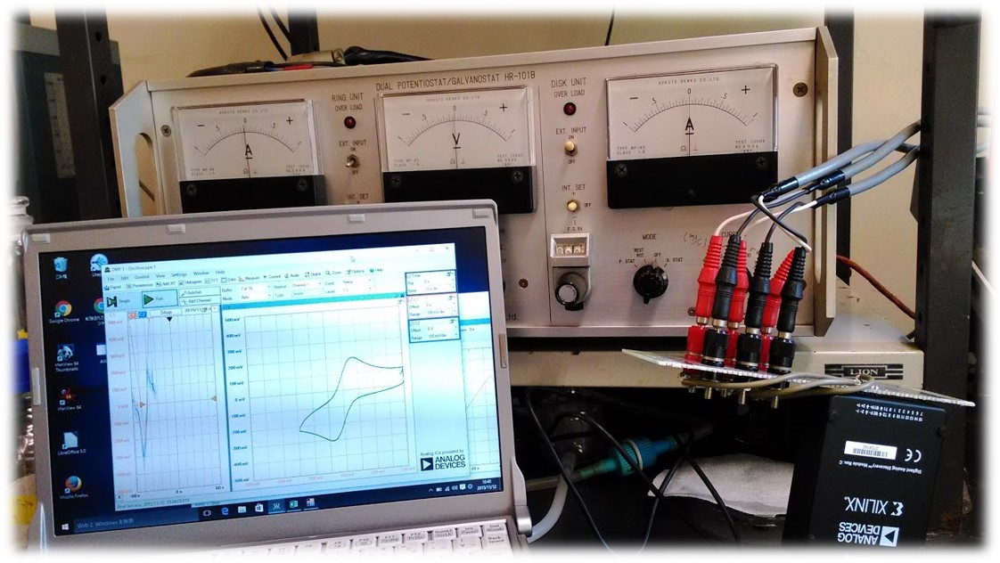
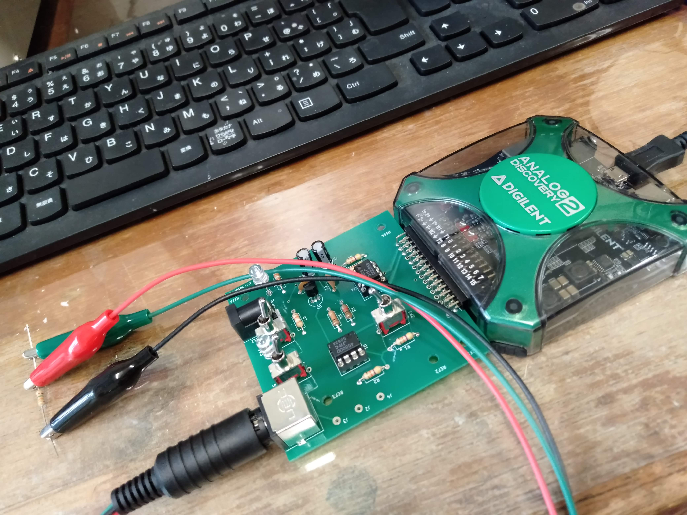

電気化学の基本測定では，ファンクションジェネレータによる制御信号発生と，その制御信号に対する電流や電位の変化をポテンショスタットを介して記録することが多い．Analog Discovery はファンクションジェネレータとしての機能もあり，しかもその出力波形の自由度が高いため，アナログポテンショスタットと組み合わせることで，多くの電気化学計測が行える．
すでに電気化学計測の主流は PC 制御のディジタルシステムに移っているが，アナログポテンショスタットを活用する意味でも，近年，著しく安価・高性能になった AD コンバータを利用することは有用である．すでに保守・性能維持の難しくなったペンレコーダの代り以上の測定上の自由度が得られる．
本稿では，Analog Discovery を電気化学計測に利用した実例を紹介する．ただし，ポテンショスタットや電気化学計測の基本的取扱いは既知のものとしているので，これらにまったく知識のない場合は，指導者や他の実験書で確認して欲しい．
また，Analog Discovery に直結するタイプのポテンショスタット拡張基板を作製したので，それについても紹介する．このポテンショスタットは安価で製作も比較的容易であり，学生実験等にも広く利用できる．実際，当コースでは3年次の学生実験で使用している．
なお，本稿の主な内容は，これまでに以下で学会発表している．
大川祐輔，"安価なAD/DAコンバータを用いる電気化学計測"，電気化学会第83回大会 1A25 (2016) (大阪)．
大川祐輔，"安価なAD/DAコンバータを用いる電気化学計測 (2) 電気化学インピーダンス測定への適用"，電気化学会第84回大会 1J25 (2017) (東京)．
大川祐輔，"安価なAD/DAコンバータを用いる電気化学計測 (3) ポテンショスタット拡張基板の試作"，電気化学会2019年秋季大会 2L01 (2019) (甲府)．
なお本稿の内容を利用あるいは参考にして研究活動や実習等を行うことについては，その利用のしかたが直接的なものであっても間接的なものであって，著者に対してとくに連絡は不要です．ただし，実施内容の成功・不成功については一切の責任を負いません．また，不明な事項については，お問い合わせください．
|  |  |
| Fig. 0.1 市販ポテンショスタットと組み合わせて試験中. | Fig. 0.2 ポテンショスタット拡張基板. |
Copyright by Yusuke J. Okawa, 2019-2025